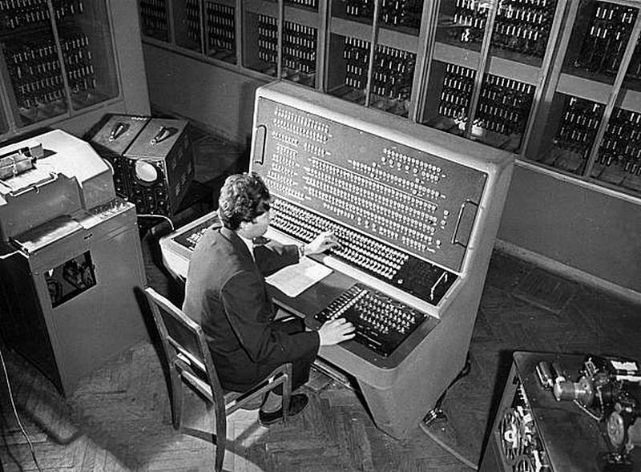

In the 30s, one of the Soviet schoolchildren, Vadim Matskevich, created a robot that could move his right hand. The creation of the robot lasted 2 years, all this time the boy spent in the turning workshops of the Novocherkassk Polytechnic Institute. At the age of 12, Vadim was already distinguished by his ingenuity.
He created a radio-controlled small armored car that launched fireworks.
Also during these years, automatic lines for processing bearing parts appeared, and then, in the late 40s, for the first time in the world, a comprehensive production of pistons for tractor engines was created.
All processes have been automated: from loading raw materials to packaging products.
In the late 40s, Soviet scientist Sergei Lebedev completed the development of the first electronic computing digital machine in the Soviet Union, MESM, which appeared in 1950. This computer has become the fastest in Europe.
A year later, the Soviet Union issued an order on the development of automatic control systems for military equipment and the creation of a department of "Special robotics and mechatronics".
The first robots in the USSR
